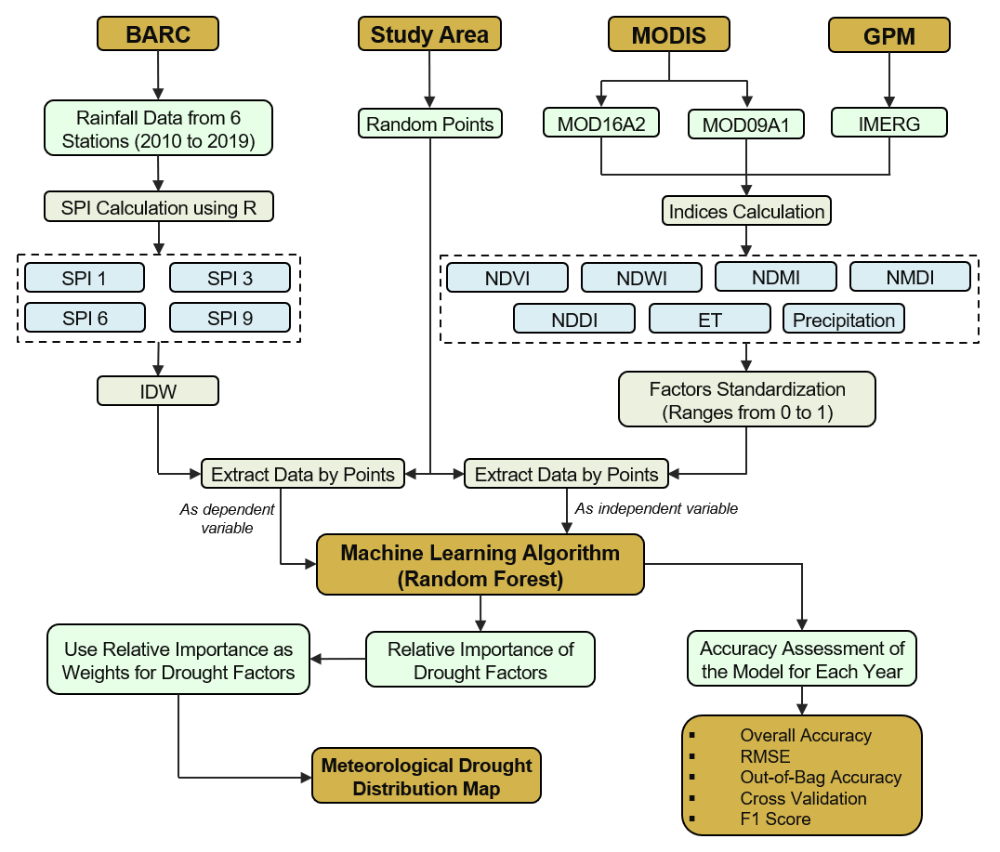
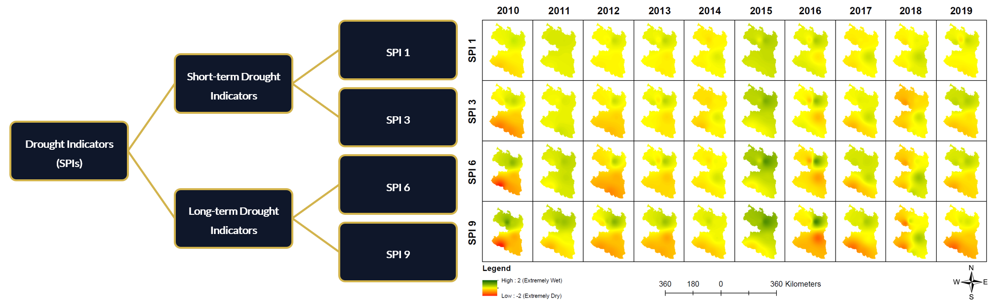

Authors
Md. Ashhab Sadiq, Showmitra Kumar Sarkar, Saima Sekander Raisa
Aim
To evaluate the spatiotemporal characteristics of meteorological drought in northern Bangladesh using multi-source remote sensing data and machine learning methods.
Summary
This study investigates meteorological drought in northern Bangladesh (2010–2019) through the integration of remote sensing indices and machine learning. Using 4 types of Standardized Precipitation Index (SPI) as the primary drought indicator, 7 satellite-derived variables were analyzed with a Random Forest model to capture spatial and temporal drought patterns. The approach provides a comprehensive framework for understanding regional drought dynamics.
Methodology
- Data Preparation: Derived seven drought-related indices (NDVI, NDWI, NDMI, NDDI, NMDI, ET, and Precipitation) from MODIS and IMERG imagery using Google Earth Engine (GEE).
- Reference Indicator: Computed the Standardized Precipitation Index (SPI) from station-based rainfall data for 1-, 3-, 6-, and 9-month timescales using R programming in RStudio.
- Model Development: Built a Random Forest model in Python (Spyder IDE) to evaluate variable importance and predict drought intensity at different time scales (1-, 3-, 6-, and 9-month SPIs).
- Spatial Mapping: Weighted indices were integrated in ArcMap using raster analysis to generate annual drought distribution maps (2010–2019).
- Validation: Assessed model performance in Python, using metrics such as accuracy, RMSE, F1-score, and cross-validation.

Remote Sensing Indices
Seven remote sensing indices were derived from MODIS and IMERG imagery to represent vegetation, moisture, and climatic conditions.
- NDVI – Indicates vegetation greenness and photosynthetic activity.
- NDWI – Measures surface water and soil moisture conditions.
- NDMI – Reflects vegetation and canopy moisture content.
- NDDI – Combines NDVI and NDWI to assess drought severity.
- NMDI – Detects vegetation and soil dryness using multiple spectral bands.
- ET – Represents surface heat flux and water loss.
- Precipitation – Shows rainfall distribution across time and space.

Standardized Precipitation Index (SPI)
- SPIs values were calculated from station-based rainfall data (2010–2019) using RStudio (SPEI package).
- Spatial interpolation of SPI values was performed in ArcMap using the IDW method.
- SPI maps served as the drought indicator for training and validating the Random Forest model.


Key Findings
- The Random Forest model achieved 81–95% accuracy.
- Precipitation was the dominant drought driver, contributing 28.32% to short-term and 26.78% to long-term drought variations.
- Apart from Precipitation, short-term droughts were influenced mainly by ET (13.57%) and NDWI (12.13%), while long-term droughts were governed by NMDI (14.27%) and NDVI (12.87%).
- The Rajshahi Division, especially the Barind Tract, faced the most frequent severe to extreme droughts during 2010–2019.
- On average, 5% of the area experienced extreme droughts and over 12% endured severe droughts.
- Long-term SPI indices (SPI-6, SPI-9) captured a higher frequency of extreme events than short-term SPIs, revealing the cumulative effect of rainfall deficits.